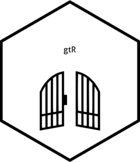
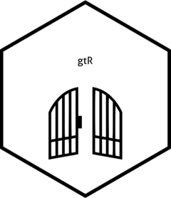

gtR is a tool for accessing UK Research and Innovation’s (UKRI) Gateway to Research (GtR) API. It is designed to reduce repetitive code when calling the API via R. This also helps eliminates barriers to users who aren’t familiar with APIs more generally.
Installation
You can install the package from GitHub using the following code:
remotes::install_github("shanej90/gtR")Example
This is a basic example which shows you how to solve a common problem:
library(gtR)
# get list of projects
gtR::query_resource_all(
resource = "project",
size = 10,
page_num = 1,
df_only = T
)
#> link
#> 1 https://gtr.ukri.org:443/gtr/api/persons/1F527452-BC36-4B36-AECF-DE4D8590E7DC, https://gtr.ukri.org:443/gtr/api/persons/997B9A08-FA90-4691-909F-1630B67EF186, https://gtr.ukri.org:443/gtr/api/persons/FCDBA889-874A-4431-B7F9-25F1B8717580, https://gtr.ukri.org:443/gtr/api/organisations/44160F04-5CBF-4E8E-A6C6-C0EF61A5865C, https://gtr.ukri.org:443/gtr/api/organisations/F3DB3C69-F0E5-4B6A-8B33-1EC7352E6CA2, https://gtr.ukri.org:443/gtr/api/organisations/F3DB3C69-F0E5-4B6A-8B33-1EC7352E6CA2, https://gtr.ukri.org:443/gtr/api/funds/7DC5DA74-FCB5-493C-925D-15E146B3306C, https://gtr.ukri.org:443/gtr/api/outcomes/keyfindings/A8DB3B4D-08A4-4452-B7D4-CD3C6448AB5D, https://gtr.ukri.org:443/gtr/api/outcomes/collaborations/7F568BDF-079B-4815-8A53-846421A15E5D, https://gtr.ukri.org:443/gtr/api/outcomes/disseminations/6DDC4F67-1905-4FC3-AE36-96B3440880EA, https://gtr.ukri.org:443/gtr/api/outcomes/disseminations/01EE2D61-C8C9-4355-A002-B79C3982DBC7, https://gtr.ukri.org:443/gtr/api/outcomes/disseminations/6052AB8F-DA19-4E67-B997-DD7880A423D5, https://gtr.ukri.org:443/gtr/api/outcomes/disseminations/8FAA097F-2F90-408B-9532-01358365895A, https://gtr.ukri.org:443/gtr/api/outcomes/furtherfundings/197ACAD5-515E-4616-9983-3D441517AC28, https://gtr.ukri.org:443/gtr/api/outcomes/furtherfundings/63CA1140-8380-478C-ADDC-F4AB31AC18CE, https://gtr.ukri.org:443/gtr/api/outcomes/impactsummaries/D9BB0CA5-9F66-4294-B3D9-9FC066D866AE, https://gtr.ukri.org:443/gtr/api/outcomes/researchdatabaseandmodels/DC77BBA8-EEDB-4B1A-B3BE-1399B5A207FC, https://gtr.ukri.org:443/gtr/api/outcomes/publications/EBCEDBB4-B51A-4CFE-942D-86C9678A115E, https://gtr.ukri.org:443/gtr/api/outcomes/publications/C214446A-AC42-46B3-838C-5BEAA996581C, https://gtr.ukri.org:443/gtr/api/outcomes/publications/E62D4FF7-B747-49D0-80A7-F2D90FEA242A, https://gtr.ukri.org:443/gtr/api/outcomes/publications/89FF6C3C-FC40-4ECD-A676-D8145E0E4BB9, https://gtr.ukri.org:443/gtr/api/outcomes/publications/4919BB7F-0E57-4D11-B53D-5A42AED1E601, https://gtr.ukri.org:443/gtr/api/outcomes/publications/77D80863-6B8E-4BA0-B8F1-DC89FBCBE52E, https://gtr.ukri.org:443/gtr/api/outcomes/publications/CAEC7799-3749-4C52-9E82-1D75A76AEB46, https://gtr.ukri.org:443/gtr/api/outcomes/publications/89F76622-666F-471D-865F-23EC30F08079, https://gtr.ukri.org:443/gtr/api/outcomes/publications/CEA6C107-BAF0-40CC-84BC-2A4E15B59A6A, PI_PER, COI_PER, COI_PER, LEAD_ORG, COLLAB_ORG, PP_ORG, FUND, KEY_FINDING, COLLABORATION, DISSEMINATION, DISSEMINATION, DISSEMINATION, DISSEMINATION, FURTHER_FUNDING, FURTHER_FUNDING, IMPACT_SUMMARY, RESEARCH_DATABASE_AND_MODEL, PUBLICATION, PUBLICATION, PUBLICATION, PUBLICATION, PUBLICATION, PUBLICATION, PUBLICATION, PUBLICATION, PUBLICATION, NA, NA, NA, NA, NA, NA, 1491001200000, NA, 1483228800000, NA, NA, NA, NA, 1546300800000, 1504220400000, NA, NA, NA, NA, NA, NA, NA, NA, NA, NA, NA, NA, NA, NA, NA, NA, NA, 1577750400000, NA, NA, NA, NA, NA, NA, 1638403200000, 1599001200000, NA, NA, NA, NA, NA, NA, NA, NA, NA, NA, NA
#> 2 https://gtr.ukri.org:443/gtr/api/persons/903ED4F0-2B82-4A4D-8911-F99A26216F44, https://gtr.ukri.org:443/gtr/api/persons/302556EF-91FE-4418-A210-C19B8B8E9B17, https://gtr.ukri.org:443/gtr/api/persons/EEBD7A1E-CF28-4550-9D19-5D56A9DC3AD5, https://gtr.ukri.org:443/gtr/api/persons/DF313B42-9DDA-412F-8969-2ADEF7A9DA4A, https://gtr.ukri.org:443/gtr/api/persons/95AB6809-6D94-4A20-859A-6AF565086474, https://gtr.ukri.org:443/gtr/api/persons/1D7D2175-8D41-4793-A906-4AE5866E07FC, https://gtr.ukri.org:443/gtr/api/organisations/818CD6C9-61EE-41F2-9F37-0C7A8F43E25D, https://gtr.ukri.org:443/gtr/api/organisations/0BF5BED7-D148-4D9B-A63B-708DF8BAF613, https://gtr.ukri.org:443/gtr/api/organisations/A0A585E0-6B0D-4643-A3A6-47943B4CBFEF, https://gtr.ukri.org:443/gtr/api/organisations/3EAE04CA-9D62-4483-B9C4-F91AD9F4C5A9, https://gtr.ukri.org:443/gtr/api/organisations/AE58F21F-3622-4382-97BB-1359BD183E9F, https://gtr.ukri.org:443/gtr/api/organisations/8A66BFC9-B9A5-48C6-B46C-761D1C13C5DC, https://gtr.ukri.org:443/gtr/api/organisations/D5337A10-AC8A-402A-8164-C5F9CC6B0140, https://gtr.ukri.org:443/gtr/api/organisations/03D8AFBB-3EA5-4885-B036-BD4F9F4F9849, https://gtr.ukri.org:443/gtr/api/organisations/3A5E126D-C175-4730-9B7B-E6D8CF447F83, https://gtr.ukri.org:443/gtr/api/funds/86A8E4A2-9F80-41F0-BE79-D79E601007A5, https://gtr.ukri.org:443/gtr/api/outcomes/keyfindings/F401518F-D673-4580-95AB-2073CDDFD35D, https://gtr.ukri.org:443/gtr/api/outcomes/collaborations/C1B80951-5D45-4CF5-9FE6-E91658E2213E, https://gtr.ukri.org:443/gtr/api/outcomes/collaborations/B6E20891-E24A-4416-AD87-606C182A1368, https://gtr.ukri.org:443/gtr/api/outcomes/collaborations/A4295605-D02A-4B1C-BDF8-49244A37F0A0, https://gtr.ukri.org:443/gtr/api/outcomes/collaborations/4F4D0857-F8C3-40F0-A7C8-2F6F24ECD945, https://gtr.ukri.org:443/gtr/api/outcomes/collaborations/CFC27F25-2E7A-4D90-A3F1-B1A4B512CC24, https://gtr.ukri.org:443/gtr/api/outcomes/collaborations/C6688E8F-B8D6-4337-8C43-90EC81626F93, https://gtr.ukri.org:443/gtr/api/outcomes/collaborations/94B6540D-3A81-4170-8B46-8B3A9302E6D8, https://gtr.ukri.org:443/gtr/api/outcomes/collaborations/F2897FAB-34E7-4DCF-BA42-88F5F9B1B575, https://gtr.ukri.org:443/gtr/api/outcomes/publications/9CDC4D57-2971-40FB-8AC0-F0E9B7EE9B7F, https://gtr.ukri.org:443/gtr/api/outcomes/publications/52DACFD5-A26E-4D64-BB41-D301EBEAF998, https://gtr.ukri.org:443/gtr/api/outcomes/publications/E1D34EED-5BB2-42BF-A8CD-19BBA4FAED4B, https://gtr.ukri.org:443/gtr/api/outcomes/publications/20762009-902B-43D0-A356-7B045A7DCDD7, https://gtr.ukri.org:443/gtr/api/outcomes/publications/57F2B181-0CF2-429C-B250-A90499C026A6, https://gtr.ukri.org:443/gtr/api/outcomes/publications/B02D980D-15A9-49A4-B7AA-8BFD52145EF3, https://gtr.ukri.org:443/gtr/api/outcomes/publications/60770E95-93FE-4088-B7F9-3A1A43E304CF, https://gtr.ukri.org:443/gtr/api/outcomes/publications/91AF0406-8E65-406F-8FD8-D5396198F63D, PI_PER, COI_PER, COI_PER, COI_PER, COI_PER, RESEARCH_PER, LEAD_ORG, COLLAB_ORG, COLLAB_ORG, COLLAB_ORG, COLLAB_ORG, COLLAB_ORG, COLLAB_ORG, COLLAB_ORG, COLLAB_ORG, FUND, KEY_FINDING, COLLABORATION, COLLABORATION, COLLABORATION, COLLABORATION, COLLABORATION, COLLABORATION, COLLABORATION, COLLABORATION, PUBLICATION, PUBLICATION, PUBLICATION, PUBLICATION, PUBLICATION, PUBLICATION, PUBLICATION, PUBLICATION, NA, NA, NA, NA, NA, NA, NA, NA, NA, NA, NA, NA, NA, NA, NA, 1459465200000, NA, 1.262304e+12, 1.262304e+12, 1.262304e+12, 1.262304e+12, 1.262304e+12, 1.262304e+12, 1.262304e+12, 1.262304e+12, NA, NA, NA, NA, NA, NA, NA, NA, NA, NA, NA, NA, NA, NA, NA, NA, NA, NA, NA, NA, NA, NA, NA, 1522450800000, NA, NA, NA, NA, NA, NA, NA, NA, NA, NA, NA, NA, NA, NA, NA, NA, NA
#> 3 https://gtr.ukri.org:443/gtr/api/persons/053CA3B2-23E9-4C52-86F8-373BF6E78D76, https://gtr.ukri.org:443/gtr/api/persons/E93B3C82-685E-4220-895D-3FF8C87326AD, https://gtr.ukri.org:443/gtr/api/organisations/936D002F-A8D1-4A93-AE5D-825ED0903D8D, https://gtr.ukri.org:443/gtr/api/funds/2215B3CB-3221-462F-9FA3-44AD1C3AA7AA, https://gtr.ukri.org:443/gtr/api/projects/9F60A284-42AE-4211-8C1D-F12A05922EBD, SUPER_PER, STUDENT_PER, LEAD_ORG, FUND, STUDENTSHIP_FROM, NA, NA, NA, 1538348400000, 1538348400000, NA, NA, NA, 1648681200000, 1696028400000
#> 4 https://gtr.ukri.org:443/gtr/api/persons/A3DDFA36-A936-4DBD-82D0-2E905D0428E1, https://gtr.ukri.org:443/gtr/api/persons/BDDD556B-B8C8-4E09-BC48-20A6555DE587, https://gtr.ukri.org:443/gtr/api/persons/567EFF0E-17A9-40F7-B23D-6169FC4D4CDA, https://gtr.ukri.org:443/gtr/api/persons/25CCC6F2-986A-4B46-818E-A16B5BE00A8F, https://gtr.ukri.org:443/gtr/api/persons/FBBFE11D-C448-489C-81C6-ADDFA84B662D, https://gtr.ukri.org:443/gtr/api/persons/26CF151E-F07C-410A-8C37-6D64D982DB8C, https://gtr.ukri.org:443/gtr/api/organisations/955C55E8-783E-4842-BB2C-2D275A3CAF82, https://gtr.ukri.org:443/gtr/api/organisations/67B34D05-3A52-4A09-8FF9-F2398D60E246, https://gtr.ukri.org:443/gtr/api/organisations/9BA5663D-B12E-4655-8746-23E39E0291DA, https://gtr.ukri.org:443/gtr/api/organisations/E937390B-7DCB-4093-88FA-0419B672B71D, https://gtr.ukri.org:443/gtr/api/organisations/5E2B04DD-4A03-45ED-9892-61C5CCB8AC68, https://gtr.ukri.org:443/gtr/api/organisations/C777E30A-9CDC-494B-A1E3-6D8D07E7728B, https://gtr.ukri.org:443/gtr/api/funds/46AC9054-4963-46E3-95EB-0610BA7F167C, https://gtr.ukri.org:443/gtr/api/outcomes/keyfindings/C840703E-4A6E-45A6-9FC7-0B6EA4336AA0, https://gtr.ukri.org:443/gtr/api/outcomes/collaborations/309BB5D3-6186-43E4-BA50-6C4F771396D2, https://gtr.ukri.org:443/gtr/api/outcomes/collaborations/89E8CCA5-5C4A-4CC0-A89B-6362A8590B4F, https://gtr.ukri.org:443/gtr/api/outcomes/collaborations/498FFF62-8BF2-4215-924A-1E21D7893F1D, https://gtr.ukri.org:443/gtr/api/outcomes/collaborations/C5489D0E-7482-47BB-9861-BFD0FB69D3F2, https://gtr.ukri.org:443/gtr/api/outcomes/collaborations/89E8320B-D076-4F68-B0FF-D32D77842F90, PI_PER, COI_PER, COI_PER, COI_PER, COI_PER, COI_PER, LEAD_ORG, COLLAB_ORG, COLLAB_ORG, COLLAB_ORG, COLLAB_ORG, COLLAB_ORG, FUND, KEY_FINDING, COLLABORATION, COLLABORATION, COLLABORATION, COLLABORATION, COLLABORATION, NA, NA, NA, NA, NA, NA, NA, NA, NA, NA, NA, NA, 1604966400000, NA, 1577836800000, 1.230768e+12, 1577836800000, 1577836800000, 1577836800000, NA, NA, NA, NA, NA, NA, NA, NA, NA, NA, NA, NA, 1652050800000, NA, NA, NA, NA, NA, NA
#> 5 https://gtr.ukri.org:443/gtr/api/persons/022AD11E-1E8F-4863-AA13-5D180BFF32B3, https://gtr.ukri.org:443/gtr/api/organisations/D5337A10-AC8A-402A-8164-C5F9CC6B0140, https://gtr.ukri.org:443/gtr/api/funds/12F189E5-A689-40E4-AF17-A2DFF9C93BBE, TGH_PER, LEAD_ORG, FUND, NA, NA, 1317423600000, NA, NA, 1427756400000
#> 6 https://gtr.ukri.org:443/gtr/api/persons/3F69647E-4A11-42A7-A7CE-933D9078A2C2, https://gtr.ukri.org:443/gtr/api/persons/D4E680A3-4977-4C6A-836A-AC047A37D704, https://gtr.ukri.org:443/gtr/api/organisations/3A5E126D-C175-4730-9B7B-E6D8CF447F83, https://gtr.ukri.org:443/gtr/api/organisations/7989ED9B-5D1A-4201-A8BD-AB943285E55A, https://gtr.ukri.org:443/gtr/api/funds/680A2D9E-5177-4496-9BFF-F8481CB562F3, https://gtr.ukri.org:443/gtr/api/outcomes/keyfindings/4D8864A3-CFEA-404A-B9D6-FB46CE7D3CC4, https://gtr.ukri.org:443/gtr/api/outcomes/collaborations/86EFF04F-AA77-4A69-9CE6-8920394D9BA6, https://gtr.ukri.org:443/gtr/api/outcomes/furtherfundings/2552CD72-0466-4922-8F69-84743A8B7ECC, https://gtr.ukri.org:443/gtr/api/outcomes/publications/0C74C089-6B5B-4E70-B736-95838B10CAB7, https://gtr.ukri.org:443/gtr/api/projects/DEC383BD-0B89-4FA9-897F-CCE51692263D, SUPER_PER, STUDENT_PER, LEAD_ORG, COLLAB_ORG, FUND, KEY_FINDING, COLLABORATION, FURTHER_FUNDING, PUBLICATION, STUDENTSHIP_FROM, NA, NA, NA, NA, 1506812400000, NA, 1483228800000, 1541030400000, NA, 1475276400000, NA, NA, NA, NA, 1602370800000, NA, NA, 1554159600000, NA, 1.64808e+12
#> 7 https://gtr.ukri.org:443/gtr/api/persons/37B0EAE5-2425-4786-BE34-B5F6F81B52B6, https://gtr.ukri.org:443/gtr/api/persons/A51BA677-0CB6-4FD7-9F89-85F8D8AE6919, https://gtr.ukri.org:443/gtr/api/organisations/3A5E126D-C175-4730-9B7B-E6D8CF447F83, https://gtr.ukri.org:443/gtr/api/organisations/9E35F112-A983-44E8-91A1-ADA3BDC37B13, https://gtr.ukri.org:443/gtr/api/funds/41C3CE22-5D14-42EC-B03C-B66C00203ECD, PI_PER, COI_PER, LEAD_ORG, PP_ORG, FUND, NA, NA, NA, NA, 1619823600000, NA, NA, NA, NA, 1745967600000
#> 8 https://gtr.ukri.org:443/gtr/api/persons/F79518F6-13F5-4764-A4E2-41E639F645DA, https://gtr.ukri.org:443/gtr/api/persons/17E7019C-0B90-4860-A4EC-F6636D43CEE7, https://gtr.ukri.org:443/gtr/api/organisations/BECA2763-0902-40AA-8DB2-836A5731CF58, https://gtr.ukri.org:443/gtr/api/funds/993C01D4-17E4-46EC-9E6C-03E407064724, https://gtr.ukri.org:443/gtr/api/outcomes/keyfindings/119106A4-DBF7-4970-B658-6FF768668F50, https://gtr.ukri.org:443/gtr/api/projects/4EB15AA8-006F-4A27-BF67-81006F40449B, SUPER_PER, STUDENT_PER, LEAD_ORG, FUND, KEY_FINDING, STUDENTSHIP_FROM, NA, NA, NA, 1548979200000, NA, 1538348400000, NA, NA, NA, 1643587200000, NA, 1696028400000
#> 9 https://gtr.ukri.org:443/gtr/api/organisations/5E2B04DD-4A03-45ED-9892-61C5CCB8AC68, https://gtr.ukri.org:443/gtr/api/funds/EFE01831-C0CB-4FDC-92D6-CFDE70C6BFD2, LEAD_ORG, FUND, NA, 1333234800000, NA, 1425081600000
#> 10 https://gtr.ukri.org:443/gtr/api/persons/3A4E1FA2-EF33-4F61-BC34-74F35E91198A, https://gtr.ukri.org:443/gtr/api/organisations/A9CA5E1C-DE53-4198-A3E4-F4764B5CB434, https://gtr.ukri.org:443/gtr/api/organisations/DBD8FC73-90C8-40C5-AAD9-A3C601B4DDF7, https://gtr.ukri.org:443/gtr/api/funds/4873EB94-E774-4BAF-B0B8-F1F1B5FBEFB1, TGH_PER, LEAD_ORG, PP_ORG, FUND, NA, NA, NA, 1411945200000, NA, NA, NA, 1548633600000
#> ext id outcomeid
#> 1 NA 7BB13FF1-2556-41BC-90C3-0671E0F218DE NA
#> 2 NA 7C51E70D-D04B-4BED-A5D4-0615B30DE683 NA
#> 3 NA 7C780771-B20B-4F40-AFEB-08813CA2BED0 NA
#> 4 NA 7CAF6B48-A53E-4E16-B983-072A5E7BA5B3 NA
#> 5 NA 7D4E7780-367C-40D6-810F-0848FEA5FBE1 NA
#> 6 NA 807E8AE3-31DD-4858-B721-0779DDEF3414 NA
#> 7 NA 8B7B12D6-A5EA-4BD9-9F33-09042D9356BC NA
#> 8 NA 8CB9F096-79F8-487A-8BF2-08D4584D721C NA
#> 9 NA 8DD752ED-07A2-4E06-8DF4-08D36CE08C26 NA
#> 10 NA D98F96A0-D762-4B6E-AFD7-088DE07ACEDC NA
#> href
#> 1 https://gtr.ukri.org:443/gtr/api/projects/7BB13FF1-2556-41BC-90C3-0671E0F218DE
#> 2 https://gtr.ukri.org:443/gtr/api/projects/7C51E70D-D04B-4BED-A5D4-0615B30DE683
#> 3 https://gtr.ukri.org:443/gtr/api/projects/7C780771-B20B-4F40-AFEB-08813CA2BED0
#> 4 https://gtr.ukri.org:443/gtr/api/projects/7CAF6B48-A53E-4E16-B983-072A5E7BA5B3
#> 5 https://gtr.ukri.org:443/gtr/api/projects/7D4E7780-367C-40D6-810F-0848FEA5FBE1
#> 6 https://gtr.ukri.org:443/gtr/api/projects/807E8AE3-31DD-4858-B721-0779DDEF3414
#> 7 https://gtr.ukri.org:443/gtr/api/projects/8B7B12D6-A5EA-4BD9-9F33-09042D9356BC
#> 8 https://gtr.ukri.org:443/gtr/api/projects/8CB9F096-79F8-487A-8BF2-08D4584D721C
#> 9 https://gtr.ukri.org:443/gtr/api/projects/8DD752ED-07A2-4E06-8DF4-08D36CE08C26
#> 10 https://gtr.ukri.org:443/gtr/api/projects/D98F96A0-D762-4B6E-AFD7-088DE07ACEDC
#> created updated identifier
#> 1 1.632841e+12 NA EP/P015883/1, RCUK
#> 2 1.632841e+12 NA ST/P002498/1, RCUK
#> 3 1.632841e+12 NA 2134601, RCUK
#> 4 1.632841e+12 NA BB/V017209/1, RCUK
#> 5 1.632841e+12 NA NE/J500331/1, RCUK
#> 6 1.632841e+12 NA 1910303, RCUK
#> 7 1.632841e+12 NA EP/V032909/1, RCUK
#> 8 1.632841e+12 NA 2293536, RCUK
#> 9 1.632841e+12 NA 508449, RCUK
#> 10 1.632841e+12 NA BB/M503447/1, RCUK
#> title
#> 1 TERAhertz high power LINKS using photonic devices, tube amplifiers and Smart antennas (TERALINKS)
#> 2 ATLAS Upgrade R&D 2016
#> 3 Activating Methane and other Alkanes by transition metal catalysts
#> 4 A wastewater biosensor enabling detailed COVID-19 population surveillance.
#> 5 QML-2011-DTG-Funding 2 Studentships
#> 6 Development of advanced diagnostic techniques for water electrolysers
#> 7 SusAgriChem - Sustainable Formulation of Agri-Chemicals via Dynamic Molecular Interfaces
#> 8 New scintillator design for thermal neutron detection
#> 9 Newcastle University And Hyperdrive Innovation Limited
#> 10 Importance of nutrition for solidarity bees and bumble bees implications for pesticides and stewardship
#> status grantCategory leadFunder
#> 1 Closed Research Grant EPSRC
#> 2 Closed Research Grant STFC
#> 3 Active Studentship EPSRC
#> 4 Active Research Grant BBSRC
#> 5 Closed Training Grant NERC
#> 6 Closed Studentship EPSRC
#> 7 Active Research Grant EPSRC
#> 8 Active Studentship EPSRC
#> 9 Closed Knowledge Transfer Partnership Innovate UK
#> 10 Closed Training Grant BBSRC
#> leadOrganisationDepartment
#> 1 Engineering
#> 2 School of Physics and Astronomy
#> 3 Sch of Chemistry
#> 4 Inst of Biomedical and Biomolecular Sc
#> 5 Research Support Services
#> 6 Chemical Engineering
#> 7 Chemical Engineering
#> 8 Electronic and Computer Engineering
#> 9 <NA>
#> 10 Crops and Environment Sciences
#> abstractText
#> 1 The TERALINKS project is dedicated to the demonstration of a real-time THz communication system, with the 200-300 GHz bandwidth, in an operational environment.\nThe TERALINKS consortium aims to integrate three key enabling technologies and demonstrate the state of the art system with industrial relevance: THz sources (photonics- based for bandwidth and core network compatibility), THz power generation using travelling wave tubes as one of the most promising high power sources at frequencies of interest, and advanced THz antennas. The TERALINKS consortium consists of key European institutes with notable but complementary expertise in every key building block of novel THz communication systems, and all consortium members have established considerable experiences in developing THz communication components and the system using technologies than span from photonics, to high frequency electronics. Our vision is to take fundamental research from individual university labs to a point where it is can revolutionise future mobile communications, with a manifold return for Europe, in innovation and exploitation. The project duration is proposed for 24 months.
#> 2 "Refer to ATLAS-UK upgrade proposal to PPRP: "UPGRADING THE ATLAS EXPERIMENT FOR THE LUMINOSITY FRONTIER AT THE LARGE HADRON COLLIDER"\n \nPPRP meeting, September 2012"
#> 3 The aim of this project is based around using photochemistry (ultimately solar energy) to activated methane and other alkanes in useful chemicals. 5-10% of oil is used for chemicals but this 5% represents 50% revenue derived from oil. Thus this project is based around deriving value from CH4 and other gases to feed into the circular economy of the energy supply chain.
#> 4 The UK Government is basing its response to the Covid-19 pandemic on scientific evidence and detailed analysis. For example, the COVID19 National Testing Strategy emphasises the critical importance of robust population-wide surveillance programmes (pillar 4) to understand the rate of infection, and how the virus is spreading across the country. This knowledge directly informs critical decision making and pillar 4 is currently reliant on a recently initiated mass population testing programme using weekly/monthly swab testing of up to 300,000 people. This approach is not only invasive and resource intensive, but it also entirely reliant on public compliance, exceptionally expensive (> £125m per annum on public incentives alone) and measuring <0.5% of the population, offers only limited geographical resolution. In contrast, wastewater surveillance has previously been used to detect and mitigate disease outbreaks and recent research has evidenced that SARS-CoV-2 is excreted into the wastewater system, highlighting an easy to access sample source which could yield real-time geographically detailed population level information of COVID-19 prevalence. RT-PCR analysis of wastewater to detect SARS-CoV-2 is possible in the laboratory, but operating this approach regularly at scale across the UKs network of wastewater sites is exceptionally resource intensive. A simple SARS-CoV-2 wastewater monitoring device that can be used by current site personnel, or incorporated into on-site automated wastewater sampling systems, would offer a cost-effective unparalleled source of detailed data on COVID-19 prevalence. Excitingly, this could provide a robust and enduring real-time warning system of local hot spots, as well as a rich dataset from which geographically specific community-level Governmental policies can be determined, future peaks can be detected early and the effectiveness of a large-scale vaccine delivery and countermeasure programmes monitored.\n\nCo-designed with industry partners, this grant aims to prove the concept of a SARS-CoV-2 biosensor as a wastewater monitoring device and demonstrate a simple working prototype operating on real wastewater samples. The ability to rapidly deliver a simple working prototype is supported by the high maturity of the underpinning science (the biosensor system builds on previous BBSRC/EPSRC investment) and the project's direct access to The University of Portsmouth's unique Environmental Technology Field Station (ETFS). The ETFS offers research facilities, wastewater samples and appropriate processing technology at a fully-operational wastewater-works. Industry partners are excited about this work and will be actively engaged in the project, particularly the prototype development stage. They are keen to support rapid exploitation and the envisaged pathway to UK impact as a whole, and the realisation of the full benefit, is through the deployment of ~18,000 SARS-CoV-2 monitoring devices across the UK's network of wastewater sites.\n\nLooking to the future, the broader application of the monitoring device is enormous. Not only could it be adapted for use on wastewater systems in less-developed countries, but the biosensor system could be altered to respond to viral mutations or other emerging viral threats. Further work would allow it to be deployed to support wider environmental monitoring applications or as a simple detection/diagnostic tool.
#> 5 Doctoral Training Partnerships: a range of postgraduate training is funded by the Research Councils. For information on current funding routes, see the common terminology at www.rcuk.ac.uk/StudentshipTerminology. Training grants may be to one organisation or to a consortia of research organisations. This portal will show the lead organisation only.
#> 6 The best way to generate zero-carbon hydrogen is by electrolysis of water using renewable energy sources (wind, solar, etc.). Polymer electrolyte electrolysers are arguably the most promising technology for this process. However, advances are required to improve performance and longevity. One of the best ways to do this is to use advanced diagnostics techniques to understand the internal workings of these devices. This project will develop techniques to understand performance at high current densities which are increasing being used with renewables under dynamic operation.
#> 7 Modern specialty chemicals are advanced multi-component systems that can contain immiscible fluids (e.g., water and organics), active ingredients, and several agents (e.g., surfactants) used to stabilise the product, extend its shelf lifetime, facilitate the application by the End Users, and deliver the active ingredients to the target. The formulation of such products is a demanding activity carried out via extensive trial and error experimental campaigns. Because personal experience is an important aspect of the process and even subtle changes in composition (e.g., in salt content) strongly affect performance, formulation is often perceived as an art, rather than a reproducible science. Further, new active ingredients are often introduced to the market while new regulations periodically limit the usage of existing chemical products towards reducing the environmental impact. Therefore, it is desirable to develop predictive capabilities to relate the composition of a product to the performance of its active ingredient. SusAgriChem seeks to develop such predictive capabilities via a molecular-level understanding of competitive interfacial effects.\n\nSusAgriChem focuses on the agri-chemical sector, one of the Eight Great Technologies identified by the UK government; indeed, food production is the largest single manufacturing sector in the UK. Reducing the amount of herbicide wasted is one of the Sustainable Development Goals as it will help achieve sustainable agriculture. SusAgriChem will exploit three enormous opportunities: (1) reduce the environmental impact of herbicides supporting the introduction of new environmentally friendly formulations, with an estimated cost in research and development of approximately $500M per new active ingredient; (2) improve the adhesion of emulsion droplets on weed leaves from the current 5% of the applied product to 10%, which would halve the environmental impact; this will be achieved without compromising the stability of the emulsion, the ability of the active ingredient to penetrate the leaves, and the ease of application of the product at the point of use; (3) revolutionise the formulation of new products, which will enable the specialty chemicals sector to remain at the cutting edge, creating new highly skilled jobs, which is extremely important in the current socio economic landscape - the specialty chemicals sector being essential for the UK economy, where in 2016 it contributed £12.1B, employing 99,000 people, especially in the after Covid-19 era. \n\nSusAgriChem seeks to change the current state of the art, by implementing a multi-disciplinary fundamental research project in close synergy between academia and industry. The partnership between UCL and Innospec will allow us to (1) develop fundamental science that will benefit the academic community at large; (2) apply the fundamental research to the development of new products; and (3) positively impact the formulation of other products (e.g., inkjet printing) in which surface active compounds are used to optimise multiple competing properties.\n\nTo enhance the impact of the fundamental research conducted, this project will train two Ph.D. students in the multi-disciplinary activities related to formulation. The partnership with industry will enable the two post-doctoral researchers to develop transferable skills including entrepreneurial insights and commercial acumen. The results will be published in peer-reviewed journal articles, presented at international conferences, and used in our undergraduate and post-graduate teaching. The results will also be disseminated to the wide public, including pre-university students, via our outreach programmes and via the publication of dissemination material that targets primary schools.
#> 8 Neutron detectors are used in various applications in nuclear security and nuclear safety. We are investigating the possibility of replacing 3He filled gas tubes with scintillation detectors. Furthermore, world-wide shortage of 3He gas and significant drawbacks of many 3He tube configurations, such as the high pressure gas in the tubes makes transport difficult, the high-bias voltage required, the stability of the system is generally poor, and the system is sensitive to microphonics. Therefore, a scintillator neutron detection system without the requirement of 3He will be very desirable. It has been found that using a thin film of doped semiconductor as a scintillator layer within a neutron detector apparatus provides certain benefits and improvements over existing technology.\nThis work will focus on the development of thin film of doped oxide (eg.ZnO) as a scintillator layer within a neutron detector for thermal neutron detection. This is typically done by designing and constructing small prototype detectors, experimentally determining the characteristics of these detectors mainly neutron detection efficiency, gamma sensitivity, intrinsic detector background, detector resolution and light collection efficiency and optimizing the design.
#> 9 To develop a highly integrated multifunctional Power Pack for electrical vehicles to allow reduced costs, increased power density and efficiency, enhanced reliability and manufacturability.
#> 10 Doctoral Training Partnerships: a range of postgraduate training is funded by the Research Councils. For information on current funding routes, see the common terminology at www.rcuk.ac.uk/StudentshipTerminology. Training grants may be to one organisation or to a consortia of research organisations. This portal will show the lead organisation only.
#> techAbstractText
#> 1 NA
#> 2 NA
#> 3 NA
#> 4 NA
#> 5 NA
#> 6 NA
#> 7 NA
#> 8 NA
#> 9 NA
#> 10 NA
#> potentialImpact
#> 1 See CHIST-ERA submission form
#> 2 "Refer to ATLAS-UK upgrade proposal to PPRP: "UPGRADING THE ATLAS EXPERIMENT FOR THE LUMINOSITY FRONTIER AT THE LARGE HADRON COLLIDER"\n \nPPRP meeting, September 2012"
#> 3 <NA>
#> 4 <NA>
#> 5 <NA>
#> 6 <NA>
#> 7 <NA>
#> 8 <NA>
#> 9 <NA>
#> 10 <NA>
#> healthCategory researchActivity
#> 1 NULL NULL
#> 2 NULL NULL
#> 3 NULL NULL
#> 4 NULL NULL
#> 5 NULL NULL
#> 6 NULL NULL
#> 7 NULL NULL
#> 8 NULL NULL
#> 9 NULL NULL
#> 10 NULL NULL
#> researchSubject
#> 1 EB5F16BB-2772-4DDE-BD6C-3B7A6914B64C, Info. & commun. Technol., 100
#> 2 C2898760-D7E5-4B25-A236-E7869CD74F88, Particle physics - experiment, 100
#> 3 NULL
#> 4 NULL
#> 5 NULL
#> 6 NULL
#> 7 99E0B904-CAB5-4511-AFB3-AA6D2B171F97, 64596636-AE88-4F6E-A816-9C4C203E1197, E847DD9B-2053-4BC7-97A9-4213B185C968, Process engineering, Catalysis & surfaces, Materials sciences, 20, 65, 15
#> 8 NULL
#> 9 NULL
#> 10 NULL
#> researchTopic
#> 1 CEDD6868-376B-45CB-BAB7-5AD38D089AC0, RF & Microwave Technology, 100
#> 2 1DC69BB9-DB25-46B4-B810-741F86398414, 200B9B9B-68EC-4D70-B889-6BD5F4538080, B Physics/Flavour Physics, Beyond the Standard Model, 10, 90
#> 3 D05BC2E0-0345-4A3F-8C3F-775BC42A0819, Unclassified, NA
#> 4 D05BC2E0-0345-4A3F-8C3F-775BC42A0819, Unclassified, NA
#> 5 D05BC2E0-0345-4A3F-8C3F-775BC42A0819, Unclassified, NA
#> 6 D05BC2E0-0345-4A3F-8C3F-775BC42A0819, Unclassified, NA
#> 7 E4D49DD8-E515-4246-8886-C9E048C0E565, 9767B5B6-94F7-4DF6-8415-C15629D67796, 0C89BB7D-DCEF-4DCF-84DB-CA53C907AB0E, Rheology, Complex fluids & soft solids, Surfaces & Interfaces, 10, 25, 65
#> 8 D05BC2E0-0345-4A3F-8C3F-775BC42A0819, Unclassified, NA
#> 9 D05BC2E0-0345-4A3F-8C3F-775BC42A0819, Unclassified, NA
#> 10 D05BC2E0-0345-4A3F-8C3F-775BC42A0819, Unclassified, NA
#> rcukProgramme start end participantValues
#> 1 NULL NA NA NA
#> 2 NULL NA NA NA
#> 3 NULL NA NA NA
#> 4 NULL NA NA NA
#> 5 NULL NA NA NA
#> 6 NULL NA NA NA
#> 7 NULL NA NA NA
#> 8 NULL NA NA NA
#> 9 NULL NA NA NA
#> 10 NULL NA NA NAEnhancements
Although the intention to expand this package’s functionality over time, if you can’t wait feel free to fork and add functionality. In this case you may find UKRI’s API documentation useful.
Logo credit
Gate icon made from Icon Fonts. Licensed by CC BY 3.0.